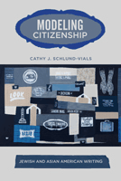

<body bgcolor="#FFFFFF" text="#000000" link="#0000FF" vlink="#CC0000" alink="#CC0000"><center><hr width="350" size="1" align="center" noshade>In fiction and nonfiction, Asian Americans and Jewish Americans grapple with their "model minority" status and the contested nature of citizenship<hr width="350" size="1" align="center" noshade><p><a href="https://cdcshoppingcart.uchicago.edu/Cart/ChicagoBook.aspx?ISBN=9781439903179&&PRESS=temple" target="_top">Buy this book!</a> | <a href="https://cdcshoppingcart.uchicago.edu/Cart/Cart.aspx?PRESS=temple" target="_top">View Cart</a> | <a href="https://cdcshoppingcart.uchicago.edu/Cart/Cart.aspx?PRESS=temple" target="_top">Check Out</a></p><p></p></center><!--none//--><h1>Modeling Citizenship</h1>
<H2>Jewish and Asian American Writing</H2>
<h3>Cathy Schlund-Vials</h3>
<P>cloth 1-4399-0317-4 $70.50, Apr 11, <FONT COLOR=#990033>Available</FONT>
<br>paper 1-4399-0318-2 $27.95, Apr 11, <FONT COLOR=#990033>Available</FONT>
<br>Electronic Book 1-4399-0319-0 $27.95 <FONT COLOR=#990033>Available</FONT>
<BR> 248 pp
6x9
</P><BLOCKQUOTE><I>"Schlund-Vials takes seriously an analogy that is so often made but that has not been fully investigated for its larger underlying structural, cultural and historical significance. She has a compelling story to tell and she moves deftly between historical discussion and literary examples that are well chosen. Her argument is original and her writing is clear, and at times riveting. </I>Modeling Citizenship<I> will make a major contribution to those who are interested in citizenship specifically, and to the growing body of criticism that takes a comparative approach to the study of race."</I>
<BR>&#151<B>Min Hyoung Song</B>, Boston College and author of<i> Strange Future: Pessimism and the 1992 Los Angeles Riots</i></I></BLOCKQUOTE>
<p>Navigating deftly among historical and literary readings, Cathy Schlund-Vials examines the analogous yet divergent experiences of Asian Americans and Jewish Americans in <em>Modeling Citizenship</em>. She investigates how these model minority groups are shaped by the shifting terrain of naturalization law and immigration policy, using the lens of naturalization, not assimilation, to underscore questions of nation-state affiliation and sense of belonging.</p>
<p><em>Modeling Citizenship</em> examines fiction, memoir, and drama to reflect on how the logic of naturalization has operated at discrete moments in the twentieth century. Each chapter focuses on two exemplary literary works. For example, Schlund-Vials shows how Mary Antin's Jewish-themed play <em>The Promised Land</em> is reworked into a more contemporary Chinese American context in Gish Jen's <em>Mona in the Promised Land.</em>
</p>
<p>In her compelling analysis, Schlund-Vials amplifies the structural, cultural, and historical significance of these works and the themes they address.
</p>
<BR>&nbsp;<h2>Excerpt</h2><P>Excerpt available at <a href="http://www.temple.edu/tempress">www.temple.edu/tempress</a></p>
<BR>&nbsp;<h2>Reviews</h2>
<p><I>"Schlund-Vials� research is excellent and the accounts of individual texts consistently illuminating; her reading of the Neil Diamond kitsch classic version of </I>The Jazz Singer<I> is wondrous. The quality of analysis is high, and her argument is very well documented�especially with respect to the legal arguments and historical background. </I>Modeling Citizenship<I> will add to the current critical conversation that is extending ethnic studies beyond its established limits and entrenched polarities. It makes an important intervention in American studies, immigrant studies, Asian-American studies and Jewish-American studies�and it�s one that will find a wide and engaged audience." </I><br>&#151<b>Jonathan Freedman</b>, Professor of English and American Culture at the University of Michigan and author of <i>Klezmer America: Jewishness, Ethnicity, Modernity</i>
<p><i>"Cathy Schlund-Vials's timely and thoughtful book...probes into what it might mean for Asian American literary studies if the trope of naturalization were the hinge on which studies of Asian American racialization were to pivot.... One of the multiple strengths of Schlund-Vials's work is her ability to negotiate thorny debates within Asian American literary studies.... [Schlund-Vials's] stunning approach to negotiating difference puts [her] work at the center of emergent debates on how and where an attention to comparative modes of analyses can transform the paradigms of Asian American literary analysis.... </i>Modeling Citizenship<i> does for Asian American literary studies what Jonathan Freedman's Klezmer America does for Jewish American literary studies."</i><br>&#151<b> <i>Amerasia 37:2, 2011</i></b>
<p><i>"The work's success lies in Schlund-Vials's comparative study of analogous yet divergent texts of Jewish and Asian American literatures regarding 'model minorities,' migration, relocation, and citizenship, thoughtfully interpreted in terms of law, public sentiment, and immigrant attitudes of belonging and alienation.... Summing Up: Recommended." </i><br>&#151<b><i>CHOICE</i></b>
<p><i>"[Schlund-Vials] read[s] Jewish and Asian American texts side-by-side to investigate how both ethnic groups have participated in and been shaped by model-minority discourse.... [Her] book is organized historically around a number of couplings between Jewish and Asian American writing that prove particularly fruitful for analyzing how shifting attitudes toward naturalization and immigration policy have determined whether or not, and to what degree, these two minority groups can obtain the status of model citizens.... [She] provid[es] nuanced, historically contextualized readings of literary works... [and] yield[s] strong insights into how cross-ethnic relations have bearing on the meanings of whiteness, transnationalism, model-minority identity, and citizenship." </i><br>&#151<b><i>MELUS</i></b>
<BR>&nbsp;<h2>Contents</h2><P>
<p>Acknowledgments
<br>Preface: Modeling Citizenship and Modeled Selfhood
<br>Introduction: Perpetual Foreigners and Model Minorities: Naturalizing Jewish and Asian Americans
<br>1. �Who May Be Citizens of the United States�: Citizenship Models in Edith Maude Eaton and Abraham Cahan
<br>2. Interrupted Allegiances: Indivisibility
and Transnational Pledges
<br>3. Utopian and Dystopian Citizenships: Visions and Revisions of the �Promised Land�
<br>4. Reading and Writing America: Bharati Mukherjee�s <em>Jasmine</em> and Eva Hoffman�s <em>Lost in Translation</em>
<br>5. Demarcating the Nation: Naturalizing Cold War Legacies and War on Terror Policies
<br>Epilogue: �A Sense of Loss and Anomie�: Model Minorities and Twenty-First-Century Citizenship
<br>Notes
<br>Bibliography
<br>Index</p>
</P><BR>&nbsp;<H2>About the Author(s)</H2>
<P><strong>Cathy Schlund-Vials</strong> is Assistant Professor of English and Asian American Studies at the University of Connecticut-Storrs.</P>
<BR><H2>Subject Categories</H2>
<p><A HREF="/tempress/american.html" TARGET="_top">American Studies</a>
<BR><A HREF="/tempress/literature.html" TARGET="_top">Literature and Drama</a>
<BR><A HREF="/tempress/race.html" TARGET="_top">Race and Ethnicity</a>
</p>
<p align="center"><a href="https://cdcshoppingcart.uchicago.edu/Cart/ChicagoBook.aspx?ISBN=9781439903179&&PRESS=temple" target="_top">Buy this book!</a> | <a href="https://cdcshoppingcart.uchicago.edu/Cart/Cart.aspx?PRESS=temple" target="_top">View Cart</a> | <a href="https://cdcshoppingcart.uchicago.edu/Cart/Cart.aspx?PRESS=temple" target="_top">Check Out</a></p><p><font face="Arial" size="1"><a href="copyright.html" onMouseOver="window.status='Web Copyright Policy';return true;" onMouseOut="window.status=''" title="Web Copyright Policy">&copy;</a> 2015 <a href="http://www.temple.edu" target="new" onMouseOver="window.status='Link to Temple University home page';return true;" onMouseOut="window.status=''" title="Link to Temple University home page">Temple University</a>. All Rights Reserved. http://www.temple.edu/tempress/titles/2113_reg.html</font></p>